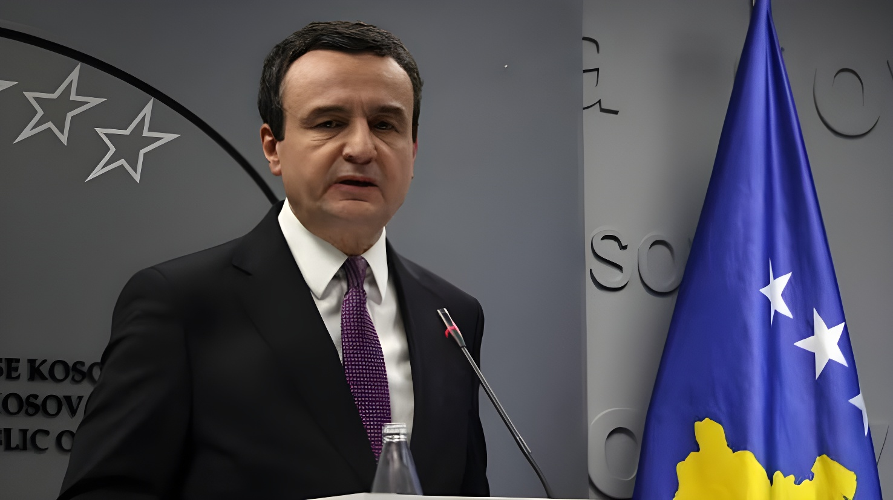

Le 7 juin 2026, le Kosovo a organisé ses troisièmes élections législatives en dix-huit mois. Vetëvendosje, le parti du Premier ministre Albin Kurti, arrive à nouveau en tête avec environ 43 % des voix — mais loin des 51 % obtenus en décembre 2025. Boycottées par près des deux tiers des électeurs inscrits, ces législatives anticipées sont le produit d'une crise institutionnelle inédite : l'incapacité du Parlement à élire un nouveau chef de l'État a entraîné une nouvelle dissolution. Le pays le plus pauvre d'Europe se retrouve face au même blocage qu'en février 2025 : un vainqueur sans majorité, une opposition fragmentée, et 980 millions d'euros de fonds européens gelés.
Les élections du 7 juin 2026 ne résultent pas d'un calendrier ordinaire : elles sont le produit direct d'une crise constitutionnelle ouverte en mars 2026. L'Assemblée issue du scrutin anticipé de décembre 2025 avait certes permis à Kurti de former son troisième gouvernement, mais elle a aussitôt buté sur une impasse majeure : l'élection d'un nouveau président de la République pour succéder à Vjosa Osmani, dont le mandat s'achevait le 4 avril 2026.
Le 5 mars, une première tentative de vote échoue faute de quorum — le parti Vetëvendosje refusant de soutenir Osmani pour un second mandat et lui préférant la candidature du ministre des Affaires étrangères Glauk Konjufca. Le lendemain, Osmani signe un décret de dissolution de l'Assemblée, que Vetëvendosje conteste aussitôt devant la Cour constitutionnelle. Le 9 mars, la Cour suspend le décret ; le 25 mars, elle le déclare sans effet juridique et accorde à l'Assemblée 34 jours supplémentaires pour élire un président. À l'expiration du délai, le 28 avril, aucun accord n'a émergé entre les groupes parlementaires. La dissolution devient alors inévitable et Albulena Haxhiu, présidente de l'Assemblée et présidente par intérim depuis le 4 avril, convoque les élections pour le 7 juin.
Avec près de 43 % des voix selon les résultats préliminaires portant sur la quasi-totalité des bureaux de vote, Vetëvendosje confirme sa position de première force politique du Kosovo — mais accuse un recul de 8 points par rapport aux 51 % obtenus en décembre 2025. Ce recul s'explique à la fois par la lassitude électorale, par la perception croissante d'une responsabilité de Kurti dans l'instabilité institutionnelle, et par l'incapacité de son gouvernement à débloquer les fonds européens du Plan de croissance des Balkans occidentaux. Le Parti démocratique du Kosovo (PDK) arrive second avec environ 21 % des voix, suivi de la Ligue démocratique du Kosovo (LDK) avec environ 17-18 %. La LDK a fait campagne conjointement avec l'ex-présidente Osmani, qui a rejoint ce parti après la fin de son mandat.
« La crise va se poursuivre. »
— Ardi Uka, chercheur en économie politique, avant le scrutin du 7 juin 2026Avec un taux de participation d'environ 37 % — soit nettement en dessous des 45 % enregistrés lors du scrutin de décembre 2025 — ces élections sont marquées par une abstention record. Sur un électorat de près de 2,1 millions d'inscrits, seul un tiers des Kosovars s'est déplacé pour voter. La lassitude est palpable : le scrutin du 7 juin est le troisième en dix-huit mois, et le coût de cette succession d'élections — plus de 10 millions d'euros pour un pays comptant parmi les plus pauvres d'Europe, avec un PIB par habitant inférieur à 6 000 euros — est ressenti comme un gâchis politique insupportable. Pour Safet Gerxhaliu, professeur à l'université de Pristina, le Kosovo traverse désormais une « crise systémique », la plus grave depuis la déclaration d'indépendance de 2008.
Pour comprendre le scrutin du 7 juin, il faut remonter à février 2025. Lors de ces premières législatives, Vetëvendosje arrive en tête avec 41 % des voix mais sans majorité. PDK et LDK refusent de former une coalition avec Kurti, perçu comme un dirigeant difficile à l'égard de ses alliés occidentaux — notamment en raison de ses positions intransigeantes dans le dialogue avec Belgrade. Des mois de blocage conduisent à de nouvelles élections anticipées en décembre 2025 : cette fois, le VV frôle la majorité absolue avec 51 % des voix, PDK et LDK étant sanctionnés par les électeurs pour leur obstruction. Kurti forme son troisième gouvernement en février 2026 — mais la machine institutionnelle se grippe à nouveau immédiatement sur la question présidentielle.
Derrière la mécanique institutionnelle, la crise politique kosovare est indissociable du dossier non résolu avec la Serbie. Belgrade ne reconnaît pas l'indépendance proclamée par Pristina en 2008 — une position soutenue par la Russie et la Chine, qui bloquent l'accession du Kosovo à l'ONU. Au nord du pays, quelque 50 000 Serbes de souche vivent dans des municipalités qui refusent de facto l'autorité de Pristina. Les négociations de normalisation, co-facilitées par l'UE et les États-Unis, sont au point mort depuis mars 2023. Kurti a durci les relations avec la communauté serbe du nord — en imposant notamment l'usage exclusif du dinar kosovar — ce qui lui a valu des frictions répétées avec ses partenaires occidentaux, Bruxelles et Washington, irrités par une posture jugée contre-productive.
Premières législatives : VV arrive en tête (41 %) mais sans majorité. PDK et LDK refusent toute coalition avec Kurti. Des mois de blocage s'ouvrent.
Secondes élections anticipées : VV obtient 51 % et frôle la majorité absolue. PDK et LDK sanctionnés. Kurti forme son troisième gouvernement en février 2026.
Échec du vote pour l'élection du président de la République : pas de quorum. Osmani signe un décret de dissolution de l'Assemblée, immédiatement contesté par VV.
La Cour constitutionnelle invalide le décret et accorde 34 jours supplémentaires à l'Assemblée pour élire un président.
Expiration du délai constitutionnel : aucun accord entre partis. L'Assemblée est dissoute. Albulena Haxhiu, présidente par intérim, convoque les élections au 7 juin.
Troisièmes législatives en 18 mois. VV en tête avec ~43 %, participation de ~37 % — record d'abstention. Kurti sans majorité, négociations de coalition à reprendre.
Le Kosovo offre le tableau d'une démocratie électoralement vivante mais institutionnellement épuisée. Kurti gagne les scrutins sans parvenir à transformer ses victoires en gouvernance stable — et ses adversaires bloquent sans proposer d'alternative. Cette paralysie n'est pas sans coût : elle retarde l'intégration européenne, gèle les fonds du Plan de croissance, et érode la confiance populaire dans les institutions. Plus profondément, elle révèle les limites d'un État dont la construction, depuis l'indépendance de 2008, reste inachevée — sans siège à l'ONU, sans normalisation avec la Serbie, sans consensus interne sur ce que doit être la présidence. Le vote du 7 juin a reconduit le même rapport de forces qu'en février 2025 : le blocage n'est pas dissipé, il est simplement remis à plus tard.